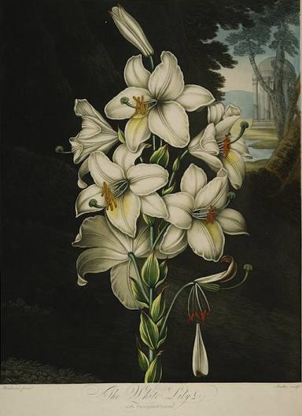
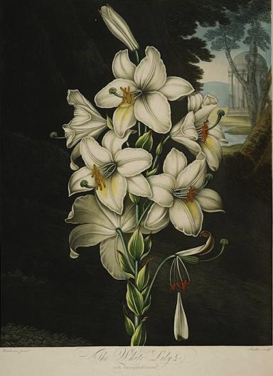

John Smith
“A Description of New England.”
John Smith: A Literary Pioneer. A brief introduction to John Smith written by Jennifer Larson.
The Voyages of Captain John Smith. A website with information about John Smith, his voyages, his journals, and more.Cotton Mather
“The Negro Christianized.”
The Mather Project.
The Cotton Mather Home Page. A website feature writings by and about Mather, as well as additional resources.Jane Coldern
Looking for Jane Colden
The Story of Jane Colden: America's First Lady Botanist.
Jane Colden: Colonial American Botanist.
Colden Preservation & Historical Society.Jupiter Hammon
"An Evening Thought: Salvation by Christ With Penetential Cries."
"An Address to Miss Phillis Wheatley."
"A Poem for Children, With Thoughts on Death."
"A Dialogue, Intitled, The Kind Master and the Dutiful Servant."
An Adress to the Negroes in the State of New York.
1730 Letter about Jupiter Hammon's Illness.
Student Finds New Work By First Published African-American Poet. NPR Interview with Dr. Cedrick May.
Jupiter Hammon Should be a Household Name.
Lloyd Harbor Historical Society: Jupiter Hammon.Phillis Wheatley
Poems on Various Subjects, Religious and Moral.
Phillis Wheatley Biography on Poetry Foundation.
Women in History: Phillis Wheatley.J. Hector St. John de Crevecoeur
Letters from an American Farmer.
Reading Revolutions: J. Hector St. John de Crevecoeur.
John Marrant
A Narrative of the Lord’s Wonderful Dealings with John Marrant, a Black.
Biography of John Marrant from Black History Review.Thomas Jefferson
Notes on the States of Virginia.
Thomas Jefferson Papers: An Electronic Archive.
Thomas Jefferson's Monticello.
William Bartram
Travels through North and South Carolina, Georgia, East and West Florida.
The Travels of William Bartram: The Official Site of the Bartram Trail Conference.
Florida Naturalists: William Bartram.
Richard Allen and Absalom Jones
“A Narrative of the Proceedings of the Black People During the Late Awful Calamity in Philadelphia, in the Year 1793.”
Africans in America: Part 3, 1791-1831. Infomation on Allen, Jones, Philadelphia, and the Yellow Fever Epidemic of 1793.
Meriwether Lewis and William Clark
Journals of the Lewis and Clark Expedition.
Lewis & Clark: The Journey of the Corps of Discovery. Companion site to the Ken Burns documentary.
Lewis & Clark's Historic Trail. Ralph Waldo Emerson
“Nature.”
Brief Biography of Emerson.
American Transcendetalism Web.
 
